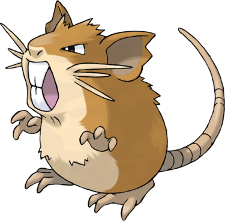

Rattatac ressemble à un gros rat et possède de petits bras, un corps marron et beige et des pieds palmés. Il a les yeux noirs. Il possède aussi une longue queue marron. Sa bouche possède deux larges incisives (une en bas et une en haut). Il a des moustaches qui sont au nombre de trois de chaque côté de sa tête. Rattatac est rapide et robuste et capable de croquer n'importe quoi. Si l'on coupe ses moustaches, il perdra de la vitesse et sera moins efficace au combat.